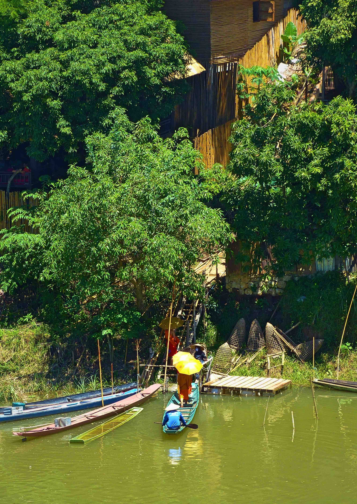

Orange Robe Tours
AUTHENTIC CULTURAL TOURS DELIVERED EXCLUSIVELY BY FORMER NOVICES AND MONKS
Orange Robe Tours is a/an NGO/social enterprise/profit for purpose project that helps former Novices and Monks transition from temple life to layperson life. It is our aim as an organization to create positive opportunities for these former monks and novices to further utilize their historical and cultural knowledge while practising their language skills through providing customarily appropriate cultural tours to travellers visiting Laos’ spiritual capital, Luang Prabang. Orange Robe Tours allow visitors to gain deeper insight into Buddhist culture through authentic cultural tours delivered exclusively by employed former Novices and Monks.